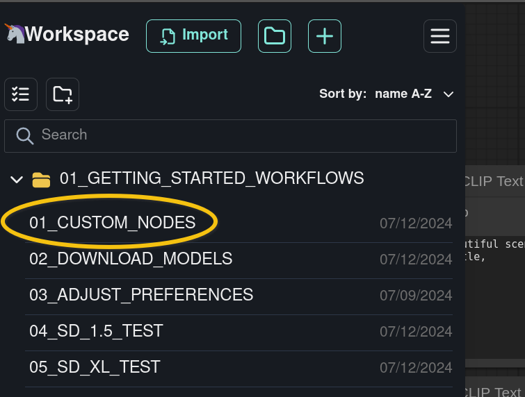
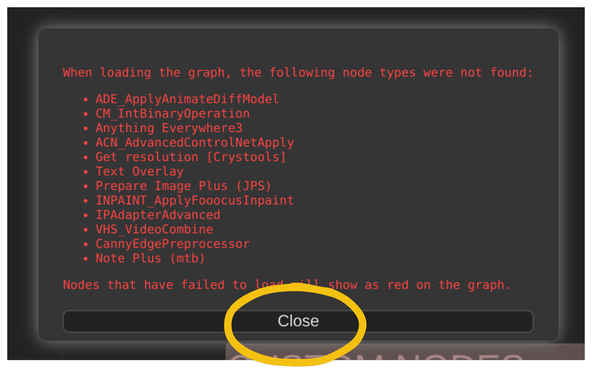
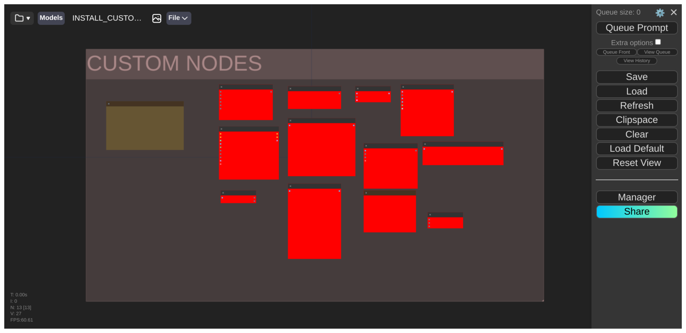
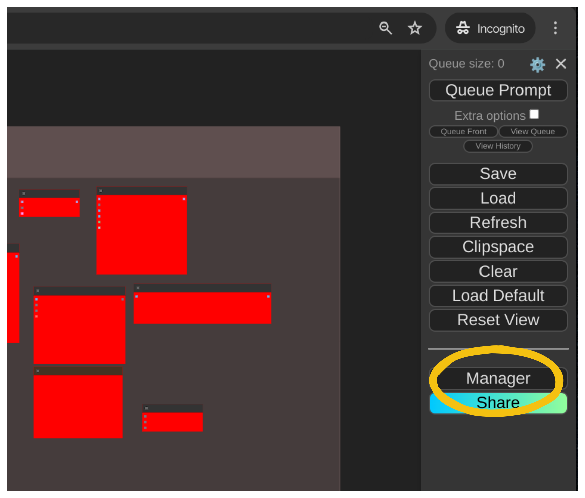
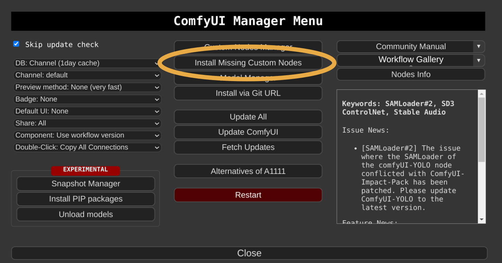
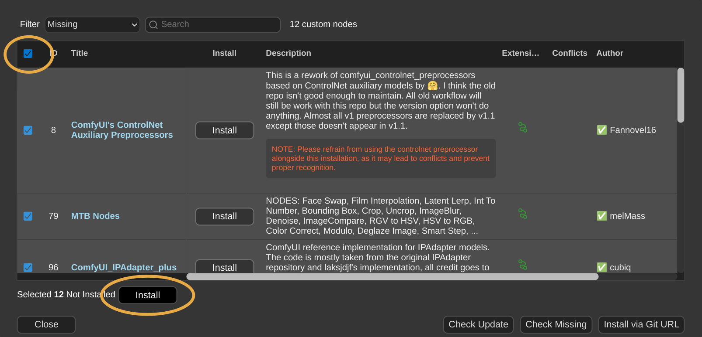
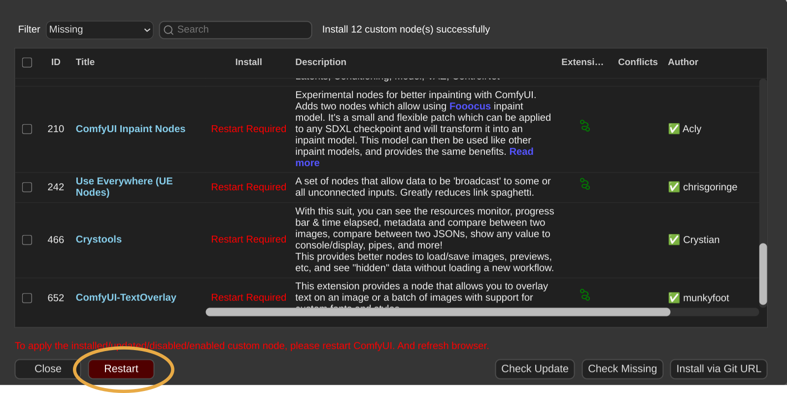
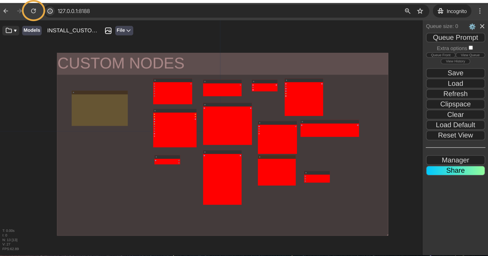
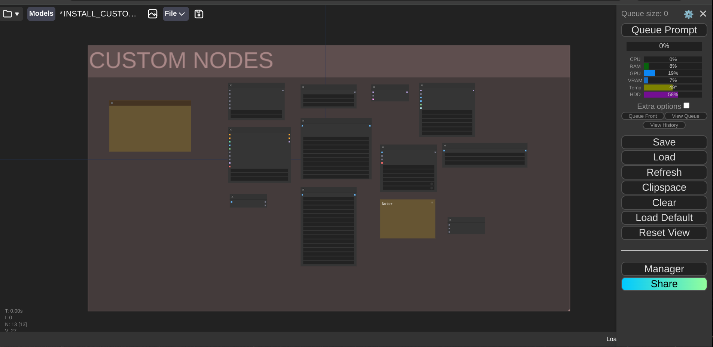

INSTALLING CUSTOM NODES
ComfyUI community developed plug-ins are called custom nodes.
These custom node packs are required to complete the exercises in this course:
AnimateDiff Evolved
ComfyMath
ComfyUI Inpaint Nodes
ComfyUI_IPAdapter_plus
ComfyUI-Advanced-ControlNet
ComfyUI-TextOverlay
ComfyUI-VideoHelperSuite
ComfyUI's Control Net Aux Preprocessors
Crystools
JPS Custom Nodes for ComfyUI
MTB Nodes
Use Everywhere (UE Nodes)
This document will guide you on how to install them.
Note that some of these custom nodes will fail to load if you are not running ComfyUI in a Python 3.11 environment.
Please make sure that you are running ComfyUI in a Python 3.11 environment to ensure maximum compatibility.
OPEN THE CUSTOM NODES WORKFLOW
OPEN COMFYSPACE
Comfyspace Toolbar -> Folder icon.
|

|
OPEN THE 'CUSTOM NODES' WORKFLOW
Click on 01_GETTING_STARTED_WORKFLOWS -> 01_CUSTOM_NODES
|

|
CLOSE THE 'NODE TYPES NOT FOUND' MESSAGE
Click on Close.
|

|
ComfyUI warns us that some nodes in the Workflow are not installed on our system. Missing nodes
are shown in red.

INSTALL MISSING NODES WITH 'MANAGER'
OPEN MANAGER
Toolbar -> Manager
|

|
OPEN THE MISSING NODES MANAGER
Click on Install Missing Custom Nodes.
|

|
INSTALL THE MISSING NODES
Click on the Checkbox in the upper left corner to select all the missing nodes.
Click on Install.
|

|
The Manager installs custom nodes from their respective GitHub repositories.
You can monitor the progress of the installation in the Terminal where ComfyUI server is running.
RESTART COMFYUI SERVER
Click on Restart.
|

|
The ComfyUI Server restarts. Observe the restart process in the Terminal where ComfyUI was started.
If the ComfyUI Server fails to restart, press CTRL+C in the Terminal (or close
the Terminal) to stop the server.
Relaunch ComfyUI Server manually.
REFRESH THE COMFYUI INTERFACE PAGE
Click on your web browser's Refresh button.
|

|
Missing nodes have been installed. There are no more red nodes in the workflow.

FINAL CHECKLIST...
Are custom nodes installed successfully?
Yes. There are no more red nodes in the Install Custom Nodes Workflow.